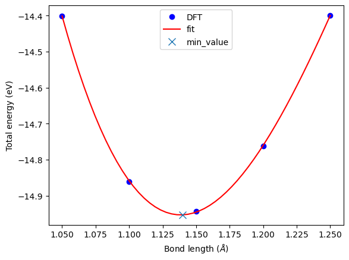

Geometry optimization
Contents
Geometry optimization#
Manual determination of a bond length#
The equilibrium bond length of a CO molecule is approximately the bond length that *minimizes the total energy. We can find that by computing the total energy as a function of bond length, and noting where the minimum is.
Here is an example in VASP. There are a few features to point out here. We want to compute 5 bond lengths, and each calculation is independent of all the others. vasp is set up to automatically handle jobs for you by submitting them to the queue. It raises a variety of exceptions to let you know what has happened, and you must handle these to control the workflow. We will illustrate this by the following examples.
from ase import Atoms, Atom
from gpaw import GPAW, PW
import matplotlib.pyplot as plt
import numpy as np
# gpaw calculator:
calc = GPAW(mode=PW(550), # planewave cutoff 350
xc='PBE', # the exchange-correlation functional
nbands=6, # number of bands
occupations={'name': 'methfessel-paxton', 'width': 0.01, 'order': 0}, # Methfessel-Paxton smearing
txt='molecules/simple_CO.out') # output file
bond_lengths = [1.05, 1.1, 1.15, 1.2, 1.25]
energies = []
# possible bond lengths
for d in bond_lengths:
atoms = Atoms([Atom('C', [0, 0, 0]),
Atom('O', [d, 0, 0])],
cell=(6, 6, 6))
atoms.calc = calc
en = atoms.get_potential_energy()
energies.append(en)
calc.write('molecules/simple_CO_d{}.gpw'.format(d)) # write restart file
from scipy.optimize import curve_fit, fmin
## Fitting
def func(x,a,b,c,d):
x = np.asarray(x)
f = a + b*x + c*x**2 + d*x**3
return f
fit_param, _ = curve_fit(func, bond_lengths, energies)
## evaluate
grid = np.linspace(min(bond_lengths), max(bond_lengths), 50)
y_eval = func(grid, *fit_param)
## find min of func in a range
odd = min((func(x, *fit_param), x) for x in grid)
print('minimum value is {}'.format(odd))
minimum value is (-14.953495784184156, 1.139795918367347)
## Plot
plt.plot(bond_lengths, energies, 'bo', label='DFT')
plt.plot(grid, y_eval, 'r-', label='fit')
plt.plot(odd[1],odd[0], 'x', ms=8, label='min_value')
plt.xlabel(r'Bond length ($\AA$)')
plt.ylabel('Total energy (eV)')
plt.legend(loc='upper center')
plt.show()

Automatic geometry optimization#
It is generally the case that the equilibrium geometry* of a system is the one that minimizes the total energy and forces. Since each atom has three degrees of freedom, you can quickly get a high dimensional optimization problem. Then the optimizer (normally implemeted in DFT code) is needed.
Here, we use ASE optimizer to iteratively find the structural energy minimum. The criterion for stopping geometry optimization process can be:
when the change in energy between two steps is less than a certain value
when the force on all individual atoms less than a certain value.
Or minimization top (without convergence) if it reaches maximum steps
The geometry optimization may called the relaxation.
The optimization algorithms can be roughly divided into:
local optimization algorithms which find a nearby local minimum
global optimization algorithms that try to find the global minimum (a much harder task).
The following code base on this link
from gpaw import GPAW, PW
from ase.optimize.sciopt import SciPyFminCG
calc = GPAW(mode=PW(550), # planewave cutoff 350
xc='PBE', # the exchange-correlation functional
nbands=6, # number of bands
occupations={'name': 'methfessel-paxton', 'width': 0.01, 'order': 0}, # Methfessel-Paxton smearing
txt=None)
mol = Atoms([Atom('C', [0, 0, 0]),
Atom('O', [1.2, 0, 0])],
cell=(6, 6, 6))
mol.center()
mol.calc = calc
e0 = mol.get_potential_energy()
d0 = mol.get_distance(0, 1)
# Find the theoretical bond length (optimize)
relax = SciPyFminCG(mol) # logfile=None
relax.run(fmax=0.05)
e1 = mol.get_potential_energy()
d1 = mol.get_distance(0, 1)
#####
print('\nexperimental bond length:')
print('CO molecule energy: {} eV'.format(e0))
print('bondlength : {} Ang'.format(d0))
print('\nPBE energy minimum:')
print('CO molecule energy: {} eV'.format(e1))
print('bondlength : {} Ang'.format(d1))
Step Time Energy fmax
*Force-consistent energies used in optimization.
SciPyFminCG: 0 01:37:52 -14.761241* 5.6791
SciPyFminCG: 1 01:38:05 -14.949139* 0.5675
SciPyFminCG: 2 01:38:13 -14.950557* 0.0123
experimental bond length:
CO molecule energy: -14.761240927629466 eV
bondlength : 1.1999999999999997 Ang
PBE energy minimum:
CO molecule energy: -14.950557085202906 eV
bondlength : 1.1381327677002044 Ang
Relaxation of a water molecule#
It is not more complicated to relax more atoms, it just may take longer because there are more electrons and degrees of freedom. Here we relax a water molecule which has three atoms.
from gpaw import GPAW, PW
from ase.optimize import QuasiNewton
calc = GPAW(mode=PW(550), # planewave cutoff 350
xc='PBE', # the exchange-correlation functional
nbands=6, # number of bands
occupations={'name': 'methfessel-paxton', 'width': 0.01, 'order': 0}, # Methfessel-Paxton smearing
txt=None)
atoms = Atoms([Atom('H', [0.5960812, -0.7677068, 0.0000000]),
Atom('O', [0.0000000, 0.0000000, 0.0000000]),
Atom('H', [0.5960812, 0.7677068, 0.0000000])],
cell=(8, 8, 8))
atoms.center()
mol.calc = calc
# Optimize
relax = QuasiNewton(mol) # logfile=None
relax.run(fmax=1e-3)
forces = mol.get_forces()
print(forces)
calc.write('molecules/H2O_relax.gpw')
Step[ FC] Time Energy fmax
*Force-consistent energies used in optimization.
BFGSLineSearch: 0[ 0] 01:50:31 -14.950782* 0.0014
BFGSLineSearch: 1[ 6] 01:50:37 -14.950782* 0.0016
BFGSLineSearch: 2[ 14] 01:50:43 -14.950782* 0.0014
BFGSLineSearch: 3[ 16] 01:50:45 -14.950782* 0.0006
[[ 0.00061177 0. 0. ]
[-0.00045795 0. 0. ]]
Visualize trajectory …